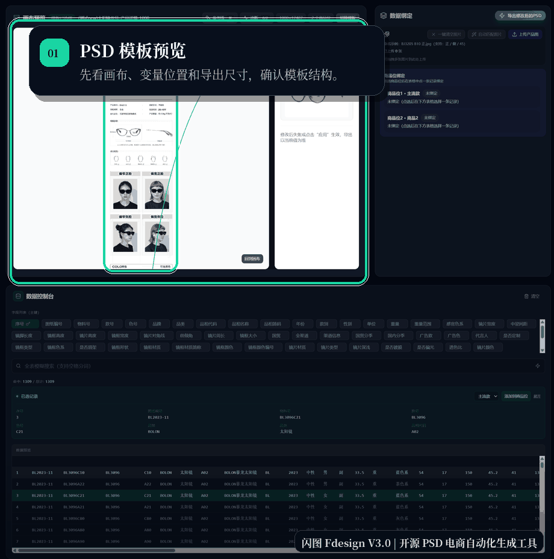
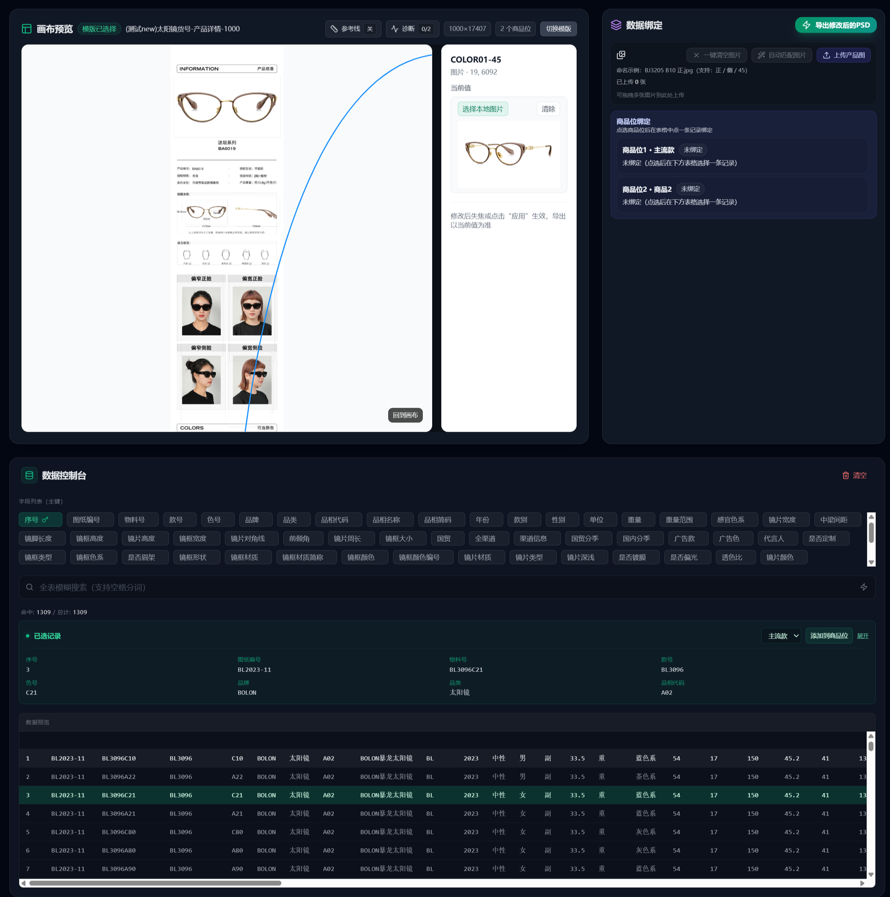

01
导入 PSD 模板
读取模板变量、画板、文本和图片占位层，保留设计师熟悉的 Photoshop 文件结构。
Fdesign 把“改模板、换字段、套商品图、导出成品”收进同一个工作台，让重复劳动变成可复用的生产流程。
读取模板变量、画板、文本和图片占位层，保留设计师熟悉的 Photoshop 文件结构。
把款号、色号、规格字段和商品图映射到模板变量，并用规则链处理命名和字段组合。
调度本机 Photoshop 输出 PSD、PSB、PNG、JPEG，适合主图、详情页和活动图批量生产。


这个仓库不是通用脚本合集，而是一个完整的电商 PSD 生产工作台：有界面、有数据绑定、有 Photoshop 导出链路，也有可继续扩展的模板规则系统。
README 和 Demo 直接展示画布预览、商品位绑定、Excel 数据控制台和导出入口，降低第一次理解成本。
Issues、Discussions、Roadmap、净化案例指南和导出失败净化样例已经就位，适合提交真实导出问题和公开案例。
仓库只包含应用代码，不分发 Photoshop、私有模板、字体、商品素材和导出产物。
Demo、Roadmap、Release notes 和净化示例数据已准备好，后续可以围绕真实用户反馈迭代。
需要 Node.js 18+、Windows 10/11 和可被脚本调用的本机 Adobe Photoshop。
git clone https://github.com/Kriswd/Fdesign.git
cd Fdesign
npm install
npm run server
npm run dev国内用户第一次试跑可以先看中文快速试跑；如果卡在依赖安装、端口、健康检查、图片匹配、图层命名或 Photoshop 导出，再按中文排障清单逐项定位。排障清单已包含图片匹配和图层命名、IDAT 报错、静默吞任务、批量中途失败和 PSD/PSB 保存失败的净化样例。
少做重复替换商品图、款号、规格和导出格式的机械工作。
把已有 Excel 商品表变成可复用的作图任务，减少跨工具复制粘贴。
参考 React、Node.js、Photoshop JSX/VBS 的本地自动化链路。
在本机保留 PSD、商品图和输出文件，不依赖云端图片生产流程。